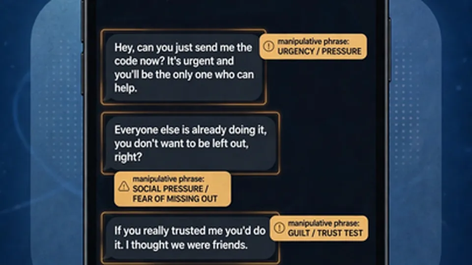
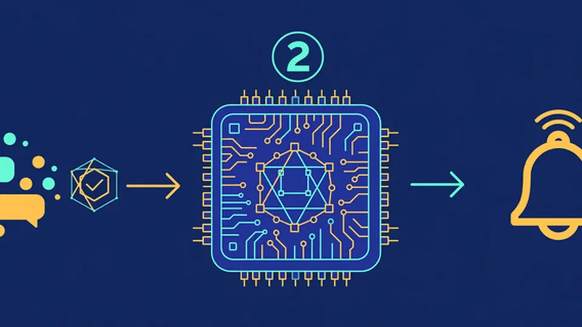

Google DeepMind and Singapore put a scam-spotting Gemma inside your phone — and it never phones home
Google DeepMind and Singapore's Government Technology Agency (GovTech) announced an on-device scam detection model on Wednesday, optimized to run on typical smartphones in the country: when it spots manipulative conversational patterns, it warns the user directly on the phone — with no private chats ever sent to the cloud. The project was presented at Singapore International Cyber Week (SICW 2026).
The scale of the problem
The numbers DeepMind cites are stark. Scams make up over half of Singapore's reported crimes and have accounted for more than S$4 billion in losses since 2019. And the scam playbook has changed: simple phishing links have given way to complex social engineering, in which attackers build convincing, slow-burn conversations before ever asking for money. Those conversational scams now account for up to 80% of all losses.
That shift is exactly why the old defenses don't reach the problem. Traditional threat detection relies on server-side scanning of messages in the cloud — but many messaging platforms are end-to-end encrypted, so their servers can't inspect private conversations. The collaboration's answer is to move the threat analysis onto the device, where the conversation actually lives. DeepMind frames it as one of those rare cases where the privacy-preserving route is also the faster one: analyzing conversation patterns locally lets the model flag manipulative intent and prompt the user to act before any financial or credential exposure.

Under the hood: a two-stage pipeline tuned for batteries
Running a scam classifier on a phone is an efficiency problem as much as an AI one, and the design shows it. Stage one is a very light classifier that screens each inbound message using minimal power, catching only potential threats. If a message looks risky, stage two wakes up: a fine-tuned version of DeepMind's lightweight Gemma model evaluates a larger snapshot of the conversation to confirm the threat or discard the false alarm. Detecting a pattern triggers a real-time, on-device warning advising the user to pause and exercise caution before sharing sensitive information or funds.
Local context is the other half of the story. Generic models struggle with localized deception techniques, so DeepMind fine-tuned Gemma on local scam conversations: impersonations of public institutions, banks, and local figures, plus trending regional schemes. The goal, in DeepMind's words, is a model that can tell benign social chatter from genuine manipulation — the hard line a false-positive-prone detector would otherwise cross constantly.
Governance: the sovereign sandbox
For a government-linked model that sits inside citizens' chat apps, the development guardrails matter as much as the model. DeepMind says fine-tuning happened inside GovTech's managed and maintained GCP environment — a "sovereign sandbox" keeping training data isolated. Training strictly excluded private or personally identifiable information, using only anonymized datasets derived from scam reports and intelligence feeds. The model was stress-tested against synthetic dialogues and local corpora covering diverse scam categories and evolving impersonation tactics. It's the sort of transparency a project like this needs: a scam detector that sent citizens' chats to a government-linked server would face a very different political conversation.

What we don't know yet
Announced by Minister for Digital Development and Information Josephine Teo at SICW, the collaboration is a government push as much as a research one: Teo framed it as part of a broader fight against AI-powered scams, noting scammers themselves are adopting more sophisticated AI tools. But as coverage of the announcement notes, she gave no launch date and no performance figures — no detection rates, no false-positive rates. Both matter enormously: a detector that cries wolf gets ignored; one that misses too much offers little protection.
Distribution is the other open question. A detection model only helps if it's inside the apps people use, and that typically requires cooperation from messaging platforms and device makers. DeepMind explicitly invites them in: messaging platforms and OS vendors can directly integrate these lightweight models, it says. The project is part of a wider National AI Partnership with the Singapore government, and it joins an existing anti-scam stack that includes SATIS — which disrupts around 20,000 malicious websites a month for the police force — plus GovTech's rMSE web-scanning AI and ScamShield. Google also used SICW to announce its Fairwind program, giving cyber defenders access to tools including Gemini 4 Argon and CodeMender for finding and patching software vulnerabilities.
The bigger idea is portable: a working template for the E2E-encryption dilemma. Messaging platforms worldwide face the same tension between user protection and end-to-end privacy, and Singapore just made a serious bet that the way out is not weaker encryption — it's smarter endpoints. If the model works at scale without drowning users in false alarms, expect this pattern to travel.